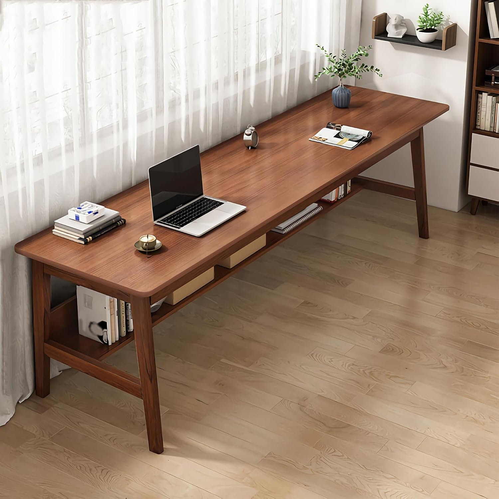

At first glance, the Plinth presents a compelling case for the enduring appeal of traditional craftsmanship. Its aged wood finish, carefully distressed to evoke centuries of thoughtful use, is rich with character and subtle variations that speak to genuine artistry rather than mass production. The brass accents, understated yet luminous, provide a delicate counterpoint, catching the light without ostentation. This harmonious blend of materials ensures the piece feels substantial and authentic, capable of anchoring a contemporary minimalist setup or complementing a venerable library. It’s a design philosophy rooted in longevity and quiet sophistication, designed to enhance rather than overpower the displayed item.
Beyond its undeniable aesthetic merit, the Plinth is engineered with a pragmatic elegance that distinguishes it from purely decorative items. The angle of display is thoughtfully calibrated to present an open book or folio with optimal visibility, making it a functional centerpiece for research or appreciation. Its substantial weight provides unwavering stability, assuring that even substantial volumes are held securely. The ingenious, discreet compartment is a particular highlight, offering a refined solution for stowing essential desktop accoutrements – a treasured pen, an antique bookmark, or even reading spectacles – keeping them within reach yet out of sight, preserving the uncluttered serenity of the workspace. This attention to detail in both form and function underscores a commitment to enduring quality.
This exquisitely handcrafted aged wood plinth with brass accents offers an elegant display solution for vintage folios and open tomes. It features a discreet compartment, seamlessly blending timeless scholarly charm with practical utility for desk essentials.
View Current Price| Material | Aged Hardwood, Brass Accents |
| Key Feature | Discreet Integrated Storage Compartment |
| Aesthetic Style | Neoclassical Scholarly / Refined Heritage |